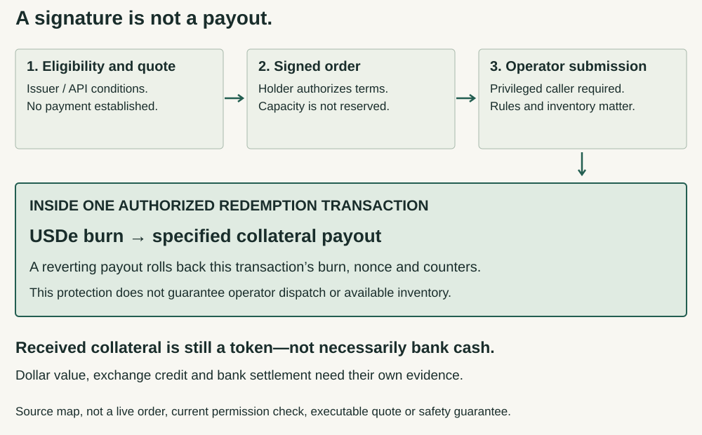

USDe Risk Audit · Research 4 · 13 September 2026
Question revision 2. What risks exist across USDe's mechanisms, smart contracts, protocols, integrations, and counterparties, and how can those risks combine and propagate through the system?
A signed redemption is not a completed exit.
Holding USDe does not automatically give you the issuer’s redemption route. Even an eligible holder’s signature is only one step: an authorized operator must execute an order that still passes the contract’s checks.
The useful protection comes later. In the inspected Mint V2 route, the USDe burn and collateral payout belong to the same transaction. If the payout reverts, the burn does not remain committed. That protects against a half-completed on-chain exchange—not against waiting before submission, a disabled route, or the received token losing dollar value. [1] [2]
Which exit is actually yours?
| Position | What can change the exit? | Holder consequence and limit |
|---|---|---|
| USDe in your wallet | The issuer controls onboarding and permitted redemption access. A secondary buyer or venue supplies a different sale route. | Possession alone does not establish issuer access. Selling may incur a discount and fees; available size and price are unmeasured. [1] |
| Approved Mint User | The operator submits; contract roles, whitelist, active asset, caps, nonce, allowance and inventory determine whether execution succeeds. | A signature does not reserve capacity or guarantee processing. A reverting payout rolls back the same transaction’s burn. Current roles and inventory remain unknown. [2] |
| sUSDe or queued USDe | A confirmed cooldown changes shares into fixed USDe; a later claim and then sale or eligible redemption are separate steps. | Finishing the queue returns USDe, not automatic issuer access or cash. The previous dated settings are not refreshed here. Prior staking investigation. |
| Exchange-account USDe | The exchange’s product, verification, crediting and withdrawal rules add another operator and account layer. | An internal credit is not a self-custody payout or bank cash. A published processing interval is not this report’s measured guarantee. [4] |
| USDe-related collateral with debt | The lender’s oracle, debt and liquidation rules continue while an exit waits. | Delay can become forced-sale cost or loss under the actual market rules. No current loan, health factor or liquidation proceeds are established. Inherited and added risks. |
The atomic protection starts inside the transaction.

The contract’s redeem entry requires a privileged redeemer role. It checks an active collateral asset, per-asset and global block limits, the signed order, and an unused nonce. It then burns USDe from the benefactor—the account supplying it—and transfers the specified collateral to the beneficiary. The beneficiary can differ only under the relevant approval rules. [2]
Failure can be protective without being convenient. Insufficient payout inventory or a reverting transfer leaves no persisted burn-only result on this path. The same rollback also restores that transaction’s nonce and counters. A prior approval transaction, gas already spent, and time spent waiting are outside that protection. The contract cannot make an operator submit the order or create collateral it does not hold. [2]
An illustrative 100-USDe redemption for 100 units of a supported token can pass a quantity check while those received units would sell for only $98 at a hypothetical $0.98 each. Neither figure is a quote. Token delivery, dollar value and eventual bank settlement must be checked separately.
A dollar ceiling is not a universal dollar floor.
The published USDe terms distinguish Holding Users from onboarded, whitelisted Mint Users. They condition issuer redemption on continuing eligibility and other requirements. Their supported-asset, reserve-pro-rata commitment is capped at one-dollar notional per USDe and subject to fees; it is not an unconditional promise that every holder receives a dollar in cash. The Mint User agreement describes reasonable processing efforts rather than a processing-time warranty. These are published conditions, not a legal opinion about a particular person’s enforceable rights. [1]
The agreement names Ethena BVI Limited and assigns legal title to reserves to the company rather than describing an individual holder’s segregated deposit. Restrictions, suspension, fees and pending-order cancellation matter alongside the code. The published terms prohibit acting for third parties or as an intermediary; no bespoke exception was established here. No actual customer’s signed agreement or bespoke service-level arrangement was reviewed. [1]
Bybit’s own guide describes both spot trading and exchange-account mint/redeem. That illustrates why the same verb can identify a different route and operator. Its stated crediting intervals and product conditions do not prove present capacity or a particular account’s ability to withdraw. The exchange route is not recommended here, and its marketing language is not treated as a liquidity guarantee. [4]
What does a successful check actually prove?
An HTTP success can describe a reverted order. The published API uses HTTP 200 for both executed and reverted. Read the order status, then distinguish a service report from a matching on-chain receipt and the expected asset received. A polling timeout does not itself cancel an on-chain instruction. No live receipt was tested in this investigation. [3]
A valid signature shows authorization under the signing rules. It is not proof of acceptance by the service, available capacity, submission or payment. The contract’s public verifyOrder helper checks only part of the execution path: it does not establish the transaction caller’s redeemer role, the active-asset gate, remaining block capacity, unused nonce, USDe allowance and balance, or payout inventory. [2]
A returned transaction hash identifies a transaction; it does not by itself show a successful receipt on the intended chain, the expected contract and beneficiary, or the expected assets delivered. A later bank or exchange-account credit is yet another event. This investigation did not submit an order or verify a live settlement receipt. [2] [3]
Nonce reuse, signing types and SDK adaptation
The inspected nonce bitmap uses the benefactor and the low 64 bits of the nonce, not the quote ID, asset or mint/redeem direction. Two otherwise different orders can therefore compete for the same consumed bit; values separated by 264 also collide. This can reject an order, but it is not evidence of minting twice with a consumed nonce. A transaction that reverts does not consume it. No individual-order cancellation entry point was found in this ABI. [2]
The API also documents a single-use request-for-quote (RFQ) identifier. Changing an order nonce does not make a consumed RFQ reusable; a new RFQ does not clear a colliding on-chain nonce. These are two different rejection rules, not two independent promises of payment. [2] [3]
The official TypeScript example uses whole-second time plus 60 for both nonce and expiry, before potentially waiting for approvals. Its Python mint example builds the order after approval, a useful countercase. Changing the TypeScript side to redeem does not change its collateral-token approval logic into the USDe allowance required for a fresh redemption. These are example-adaptation constraints, not observed failures of the production app. No example was executed. [3]
The contract’s literal signing type uses expiry uint128 and nonce uint120, while the ABI structure uses expiry uint120 and nonce uint128. The SDK matches the signing literal. Ordinary small values fit both; blindly deriving the signing type from the ABI would produce a different type string. No cryptographic signature test or exploit demonstration was performed. ERC-1271 contract-wallet validity can depend on time, wallet state and signer authorization. A preflight success is not a permanent right to execute. The actual benefactor wallet and its controllers were not traced to a current deployment. EIP-712 typed hashing alone does not supply replay protection. [2] [3] [7]
The stable-asset guard is not a dollar-price oracle
The source normalizes declared token decimals and compares signed quantities, with basis-point flooring and direction-specific limits. On redemption, it bounds certain payouts above the USDe amount; it does not set a minimum dollar value for what a holder receives. Different asset classifications take different paths. Current classification and limit values remain unverified. Operator pricing policy and any external price checks are separate from this on-chain quantity guard. [2]
The twenty original source-derived tests were byte-matched and rerun. Ten additional off-chain checks cover status interpretation, separate RFQ/nonce rules and policy-versus-contract timing. All thirty passed; the original route test includes 999 amount cases. Rollback is explicitly modeled, not independently demonstrated by these tests. These are not EVM tests, signature verification, compilation or live API calls. Inputs, test scope and limits.
Documentation was checked against code, not copied as a transaction recipe
The API guide’s initial examples mix production-header and example addresses, and a displayed redemption example says MINT. Its decimal wording also conflicts with the shown USDT amount. The pinned SDK provides a separate check of address and signing definitions. The complete substantive order/status and validity-policy sections are now readable. The policy describes last-look after signing and an advance-expiry buffer; those are service-admission conditions, not every check performed by the on-chain helper. A quote window, the service buffer and the signed inclusion-time deadline are different clocks. The operator may reject a signed order but cannot use that policy to rewrite its signed terms. [3] [6]
Primary redemption can work while a retail exit does not.
A November 2025 issuer proposal and adviser discussion describe primary redemptions continuing during an exchange-specific dislocation. This is a reported historical countercase, not a transaction replay performed here. It shows why an exchange discount alone cannot establish a primary halt—and why reported primary success does not prove every exchange user could exit. Proposed reserve support was capped and conditional, not a permanent par-value buyer for all holders. [5]
Arbitrage can reconnect prices when eligible actors have inventory, working transfers and time. If those conditions fail together, atomic settlement does not connect separated venues. An ordinary holder’s route, and a borrower’s liquidation exposure, must be examined on their own terms.
Still unverified: current redeemer and controller permissions, complete Safe links and event history, staking owner and Silo checks, active assets and block limits, payout inventory, live quotes, order-processing times, final receipts and current backing reconciliation. The earlier observation at Ethereum block 25,952,841 on 11 September 2026 is not relabelled current. No whole-system safety grade, current dollar-exit guarantee or personal trading direction follows.
Evidence and scope
[1] Published conditions. USDe terms and Mint User agreement, displayed update August 2025, substantive bodies read 13 September 2026. Sections on eligibility, reserve title, fees, interruption, processing and precedence were inspected. No private agreement or enforceability opinion.
[2] Mint V2 source. Provider bundle for Ethereum Mint V2: EthenaMinting.sol, SingleAdminAccessControl and IEthenaMinting read in the supplied immutable evidence. Solidity 0.8.20, Shanghai, optimizer 20,000. The previous provider/runtime corroboration is inherited, not a new rebuild or current-state poll.
[3] API and public client. API overview, RFQ, submission, error and order-status sections, with the substantive reading completed on 13 September 2026. Published behavior, not a live API test. Official client at commit 40b4c32: four complete TypeScript/Python files read, not executed. Different retrieval, same issuer—not independent assurance.
[4] Exchange-described route. Bybit obtain-USDe guide and USDe product page, read 13 September 2026. Published product descriptions, not an account test, current quote or processing guarantee.
[5] Countercase and proposed support. November 2025 secondary-market dislocation proposal and adviser replies. Historical issuer/adviser accounts; execution and reported quantities were not independently replayed.
[6] Published admission policy. Order-validity checks, complete substantive body read 13 September 2026. Off-chain last-look and admission conditions are distinct from source enforcement and measured service performance.
[7] Signature standards. ERC-1271 specification and reference validation, and EIP-712 type encoding, domain and replay sections, read 13 September 2026. Standards do not establish the configuration or correct behavior of an actual wallet.
Curated route and calculation data · All research · Evidence method